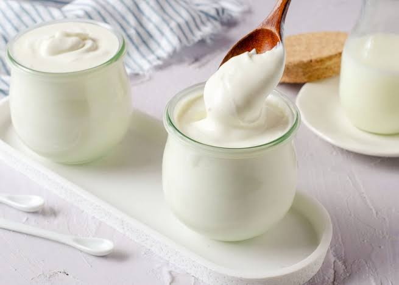

ElYogur Un yogur natural sin aditivos puede mantenerse comestible durante meses sin refrigeración (siempre cerrado), ya que el aumento de la acidez por la fermentación evita que crezcan bacterias dañinas (aunque comercialmente se le pone fecha de caducidad).
Fecha: 24 de Agosto de 2025

El Yogur más sano
El Yogur mas sano es el Yogur natural aquel que es 100% natural, sin azúcares añadidos y con una lista corta de ingredientes (solo leche y cultivos lácticos vivos).
Versiones griegas o sin grasa ni azúcares añadidos (ojo: las versiones "cero" suelen usar edulcorantes artificiales, por lo que no se recomiendan para niños).